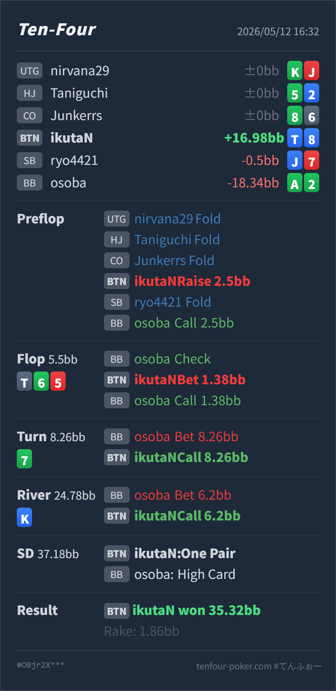

T4 HAND REVIEW
BTN T♦8♦ の T-high board turn pot lead call レビュー
GTO基準ではpreflop openとflop small cbetは自然です。turnのpot leadには、foldではなくcallが標準寄りで、raiseは強いvalueや強drawに寄せたい場面です。
Hero: BTN
T♦ 8♦Villain: BB
A♣ 2♣Board:
T♠ 6♣ 5♥ 7♣ K♦- 主要論点:
T♠ 6♣ 5♥ 7♣でBBのpot donkに、BTNのT♦8♦をfold・call・raiseのどれに置くか。 - 次回の判断基準: top pairにOESDが加わったhandは、pot betにも十分call候補です。ただし相手の強いmade hand密度が高いので、raiseで膨らませすぎません。
- 5枚役確認: River時点のHeroは
T♦ T♠ K♦ 8♦ 7♣のone pairです。two pair以上ではありませんが、river小betにはかなりcallしやすい位置です。
ハンド要約
- Hero
- BTN
T♦ 8♦ - Villain
- BB
A♣ 2♣ - 形式
- T4 6MAX Cash
- Preflop
- UTG fold, HJ fold, CO fold, BTN Hero raise
2.5BB, SB fold, BB Villain call - Board
T♠ 6♣ 5♥ 7♣ K♦- Flop
- Pot
5.5BB, BB Villain check, BTN Hero bet1.38BB, BB Villain call - Turn
- Pot
8.26BB, BB Villain bet8.26BB, BTN Hero call - River
- Pot
24.78BB, BB Villain bet6.2BB, BTN Hero call - Showdown
- BTN Hero one pair, BB Villain high card
- Result
- BTN Hero won
35.32BB, rake1.86BB

判断のズレ
| 論点 | その場で置いた見立て | どこがズレやすいか | 次回の基準 |
|---|---|---|---|
| flop cbet | top pairなので小さく打つ | T♠6♣5♥ はBBがかなり当たるボードですが、BTNのT8sはtop pairでprotection価値があります。 | top pair弱kickerは小さめbetでvalue/protectionを取る |
| turn pot lead対応 | かなり強く打たれて苦しい | 7♣ はBBのstraight/two pairを増やす一方、Heroもtop pair + OESDになっています。必要勝率は約33%で、foldはやや弱すぎます。 | pair + OESDはpot leadにもcallを残す |
| turn raise | 相手がdrawなら押し返せそう | BBのpot leadは98/84/43/two pair/setも多く、HeroのT8はshowdown valueもあるためraise bluffに回す必要が薄いです。 | raiseはstraightや強いclub draw中心、T8 no clubはcall |
| river small bet | 一応負けていそう | River K♦ はclub missで、BBのsmall betにはmissed clubや弱いpairの薄いbetが残ります。 | pot 25%程度にはone pairで広めにcallする |
ストリート別レビュー
| ストリート | その時点の見え方 | 実ハンドの位置づけ | 評価 | その場の一手 |
|---|---|---|---|---|
| Preflop | BTNまでfoldで回り、blindに対してposition付きでopenできる場面です。 | T♦8♦ はBTN openに自然に入るsuited connector寄りのhandです。 | 良い | 2.5BB openで問題ありません。 |
Flop T♠ 6♣ 5♥ | BB defend側にpair、straight draw、two pair、setが多いボードです。BTNはoverpairやTxを持つ一方、全体では無理に大きく押すボードではありません。 | Heroはtop pair weak kickerで、まだvalueとprotectionがあります。 | 良い | 1.38BB into 5.5BB のsmall cbetは良いです。BBの広いfloatやdrawに価格を与えすぎない範囲で打てています。 |
Turn 7♣ | BBのpot leadは強いサインです。98/84/43 のstraight、two pair、set、club drawが混ざります。 | Heroはtop pairにOESDが加わり、4または9でstraightになります。8を持つため一部の98もblockしています。 | 良い | foldは弱すぎます。raiseは相手の強いレンジにぶつかりやすいので、callが一番自然です。 |
River K♦ | clubが外れ、BBがpot 25%程度の小さめbetを打っています。 | Heroはone pairのままですが、turnでcallしたレンジの中では十分なcatcherです。 | 良い | このサイズにはcallで良いです。必要勝率が低く、missed clubを拾えます。 |
持ち帰り
T♠6♣5♥のBTN top pair弱kickerは、大きく打つより小さくvalue/protectionを取る方が扱いやすいです。- turn
7♣は怖いカードですが、Heroもpair + OESDに強化されています。pot leadに対して即foldするには強すぎます。 - ただし、raiseはやりすぎ寄りです。BBのpot leadはnut寄りのhandも多く、Heroはshowdown valueを持つのでcallで実現する方が安定します。
- riverの小betにはcallで良いです。特にclub miss後は、BB側にbluff候補が残ります。
exploit 補足
- 実戦のBBは
A♣2♣でturnにnut flush drawとしてpot leadし、riverでmissed drawを小さく打っています。このタイプがdrawで強くleadするなら、turn callとriver small bet callは大きく利益化できます。 - 一方で、相手がturn pot leadをほぼstraight以上でしか使わないなら、turnはcallの下限寄りになります。その場合もraiseではなく、callしてriverのサイズとカードで判断します。